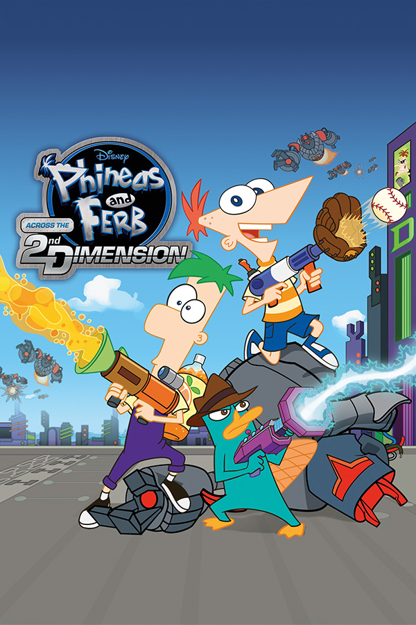

|  | |
| Playtime | Not Played |
| Last Activity | Never |
| Added | 4/27/2025 10:06:45 |
| Modified | 4/29/2025 9:14:36 |
| Completion Status | Not Played |
| Library | Playnite |
| Source | |
| Platform | Sony PlayStation 3 |
| Release Date | 8/2/2011 |
| Community Score | |
| Critic Score | 63 |
| User Score | |
| Genre | Action-adventure Platform |
| Developer | Altron High Impact Games Virtual Toys |
| Publisher | Disney Interactive Studios Sony Computer Entertainment |
| Feature | Multiplayer Single Player |
| Links | Wikipedia Official website |
| Tag | [People] artist: Atsuko Kubota [People] artist: Lloyd Murphy [People] artist: Takashi Morishima [People] composer: Andrew Aversa (PS3, Wii, PSP) [People] composer: Tomoyoshi Sato (DS) [People] designer: Avery Bennet [People] designer: Ronn LeFeuvre [People] programmer: Jason Fourier [People] programmer: Justin Lepine [People] programmer: Ronn LeFeuvre [People] writer: Ronn LeFeuvre |
Phineas and Ferb: Across the 2nd Dimension is a video game based on the TV movie of the same name and the first multi-platform game in the Phineas and Ferb video game series. It was released in August 2011 on most seventh generation platforms to coincide with the premiere of the film, followed a year later by a PlayStation Portable version.
The PS3, Wii and PSP versions allow the players to play as Phineas, Ferb, Perry, Agent T, Second Dimension Phineas and Second Dimension Ferb as the major characters while unlocking Isabella, Baljeet, Peter the Panda and Pinky the Chihuahua by collecting tickets from mini games. Players will have the option to work together in two-player cooperative modes while navigating through an old time 1928-style cartoon world, a lawn gnome land, a balloon world, and a gelatin world. In a mission to save the world, players will journey through 25 levels while overcoming obstacles. They also can upgrade new gadgets including the Carbonator, which fires carbonated orange soda that can melt enemies and Ninja Gloves, which allows players to stick to walls. The PlayStation 3 version is the first time a Phineas and Ferb video game features PlayStation Move motion controller compatible gameplay.
In the DS version, Phineas, Ferb, and Perry are playable. There are five worlds with varying level designs totaling 30 levels. Players work to earn gadget upgrades, including a baseball launcher and a grapple gun, while solving environmental puzzles in an effort to save Alternate Danville. The DS version has a significant difference from the previous DS games in the series, as it focuses more on platforming than collecting items.
After the release of the first video game, it was revealed that a Phineas and Ferb Wii game was in development. Later, Disney Germany confirmed a PS3, Wii, and DS game for the series to be in development. The game was officially announced in April 2011 as an Across the 2nd Dimension video game adaptation. The game was featured at a video game press event in New York City in April, alongside other games such as Lego Pirates of the Caribbean: The Video Game. The title was also playable at the event.
In an article of Kotaku, it was noted that the console versions of the game borrow elements from the Ratchet & Clank games. This is due to High Impact Games, the game's developer, being a spin-off company of Ratchet and Clank series creators Insomniac Games. Plans for an Xbox 360 version were scrapped due to difficulties with attempting to reproduce the gameplay of the Wii and PS3 versions, controlled with physical wand-based motion controllers, with the Kinect's unique camera-based controller, a similar problem that may have prevented wand-based motion controller games like The Lord of the Rings: Aragorn's Quest from being considered for development on that platform.
In June 2012, a PlayStation Portable version of the game was announced.
According to the review aggregation website Metacritic, the Wii version of Phineas and Ferb: Across the 2nd Dimension received "generally favorable" reviews, the PlayStation 3 version received "mixed or average" reviews, and the DS version received "generally unfavorable" reviews. The game's visual design has been praised, with GamePro stating that the "environments [are] gorgeous" and GameSpot saying that "the entire game faithfully captures the whimsical look of the cartoon", but it has been criticized for its "very short campaign" and for being "extremely easy".